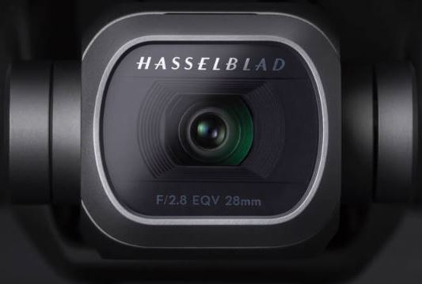

Что такое Mavic 2 Pro?
Дрон Mavic 2 Pro - это инженерное чудо, идеальное для аэросъемки. Дрон обладает всеми лучшими технологиями DJI, он преобразит мир аэросъемки.
Mavic 2 Pro оснащен совершенно новой камерой Hasselblad L1D-20c. Камера L1D-20c работает по уникальной технологии Hasselblad Natural Colour Solution (HNCS)5, позволяющей пользователям делать великолепные снимки с воздуха с разрешением в 20 мегапикселей и потрясающими цветами.

Преимущества
1
Интеллектуальные
режимы
Mavic 2 унаследовал 6 стандартных режимов
интеллектуальной съемки QuickShot:
Roket/Dronie/Circle/Helix/Boome
rang/Asteroid.
Roket/Dronie/Circle/Helix/Boome
rang/Asteroid.
2
Active
Track 2.0
Усовершенствованный режим второго поколения
распознаёт и отслеживает объекты ещё точнее, быстрее и умнее.
3

Панорамная
съемка
Mavic 2 поддерживает 4 режима
панорамной съёмки: сферическая,
180 градусов,
горизонтальная, вертикальная
горизонтальная, вертикальная
4

Крутая
камера!
Технология Hyperlapse в четырёх режимах
исполнения.
Улучшенный фото режим HDR
Функция HyperLight для съёмки в условиях слабого освещения
4К съёмка
Улучшенный фото режим HDR
Функция HyperLight для съёмки в условиях слабого освещения
4К съёмка
Характеристики
Dlog-M 10 бит
Mavic 2 Pro поддерживает цветовой профиль Dlog-M 10 бит с
более широким динамическим диапазоном, дающим больше возможностей для
цветокоррекции.
Матрица CMOS 1
Зона активной работы новой 1-дюймовой матрицы CMOS в четыре
раза превышает показатели Mavic Pro
Камера Hasselblad
Камера Hasselblad L1D-20С
известны эргономичным дизайном
и превосходным качеством изображений.
Видео HDR
Благодаря поддержке видео 4K HDR 10 бит, Mavic 2 Pro можно
подсоединить к совместимому с HLG 4K ТВ и просматривать запись в полном цветовом
спектре
Остались вопросы?
Какие отличия между Mavic 2 Pro и Mavic 2 Zoom?

В Mavic 2 улучшены практически все аспекты:
камера, передача видеосигнала, полётное время, скорость, уровень шума, обнаружение
препятствий в нескольких направлениях, интеллектуальные функции и уникальная функция
Hyperlapse (гиперлапс).
Чем Mavic 2 лучше Mavic Pro?
В Mavic 2 улучшены практически все аспекты:
камера, передача видеосигнала, полётное время, скорость, уровень шума, обнаружение
препятствий в нескольких направлениях, интеллектуальные функции и уникальная функция
Hyperlapse (гиперлапс).
Можно ли подключить Mavic 2 к очкам DJI Goggles?
В Mavic 2 улучшены практически все аспекты:
камера, передача видеосигнала, полётное время, скорость, уровень шума, обнаружение
препятствий в нескольких направлениях, интеллектуальные функции и уникальная функция
Hyperlapse (гиперлапс).
Является ли Mavic 2 водонепроницаемым？
В Mavic 2 улучшены практически все аспекты:
камера, передача видеосигнала, полётное время, скорость, уровень шума, обнаружение
препятствий в нескольких направлениях, интеллектуальные функции и уникальная функция
Hyperlapse (гиперлапс).